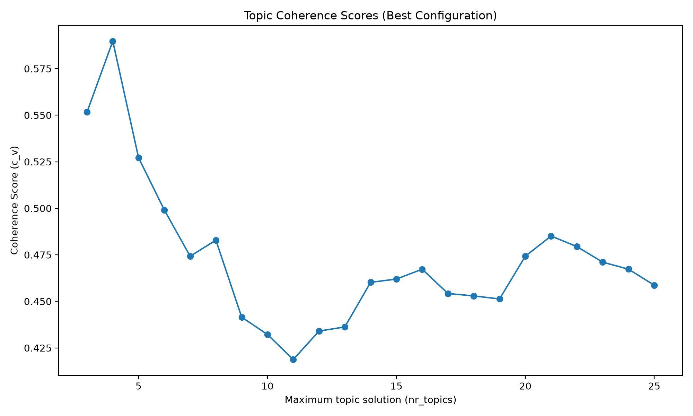

The evidence behind the tutorial
Inspect the run.
Follow the decisions.
One public corpus. One recorded discovery search. The walkthrough makes the inputs, model outputs and handoff to human interpretation visible.
Start with the language. Look beyond the score.
Coherence measures association among representative words. Researchers still need to inspect the posts, coverage and domain context. These groups describe the selected Trump account archive; they are not the dissertation’s topics or a human-approved political taxonomy.
| Group | Representative words | Posts |
|---|---|---|
| Topic 0 | great, trump, president, thank, people, get | 21,073 |
| Topic 1 | clinesmith, guilty, plead, kevin, resistance, fbi | 10 |
| Topic 2 | izing, dominion, vote, part, via, one | 6 |
Read the imbalance as evidence.
The selected solution is highly imbalanced: the largest group contains 21,073 posts, while the remaining groups contain 10 and 6. Close reading shows a broad dominant group and small event-specific lexical groups. The unweighted mean coherence gives each topic equal weight regardless of its size, so small internally similar groups can raise the score. This result is useful diagnostic evidence, not a finished taxonomy. Before research classification, review corpus coverage, repetition and alternative candidate settings; record any revised selection rule as a new analysis.
Every source post is accounted for.
The canonical corpus has 34,416 posts, June 16, 2015 through January 8, 2021. Preprocessing leaves 32,725 modeled texts. The other 1,691 have no remaining tokens and are retained in the source corpus and exclusion record. Of the modeled texts, 21,089 enter a topic and 11,636 remain outliers.
The period chart uses all source posts in each period as its denominator. It describes this model’s assignments and coverage. It does not substitute topic membership for validated theme prevalence.
Know which kind of evidence you are seeing.
| Surface | What it establishes |
|---|---|
| Recorded discovery | Measured output of the maintained Python search on this public corpus |
| Live naming and classification | New, bounded OpenAI responses for you to inspect |
| Your draft theme map | Your learning exercise, explicitly without formal research approval |
| Dissertation and two papers | Historical research applications, available unchanged in the research library |
Research classification requires actual theme review and an independent benchmark. No completed Trump human review or validated classifier is asserted. Topic models and LLMs include probabilistic steps; changes in seeds, model revisions or dependencies can alter outputs.
Inspect the exact search and artifacts
| Search | 50 parameter draws × ceilings 2–25; seed 42; fit once then reduce |
|---|---|
| Candidate status counts | insufficient_topics: 49; scored: 1,151 |
| Selected iteration / ceiling | 43 / 4 |
| UMAP | {"n_neighbors": 15, "n_components": 3, "min_dist": 0.01, "metric": "cosine"} |
| HDBSCAN | {"min_cluster_size": 5, "metric": "euclidean", "cluster_selection_method": "eom"} |
| Model reload | Saved assignments verified against the reloaded fitted model |
| Discovery API calls | 0; computation ran locally |
Run summary · Every candidate · Assignments by ID · Exclusions by ID · Environment and model hash · Artifact checksums
The fitted model is generated by the local recipe; its hash is recorded. Only load pickle artifacts you trust.

Take the next step in your fork.
Verify the input, rerun discovery, collect naming evidence and have researchers interpret it. The package records each stage and stops at review and validation gates.